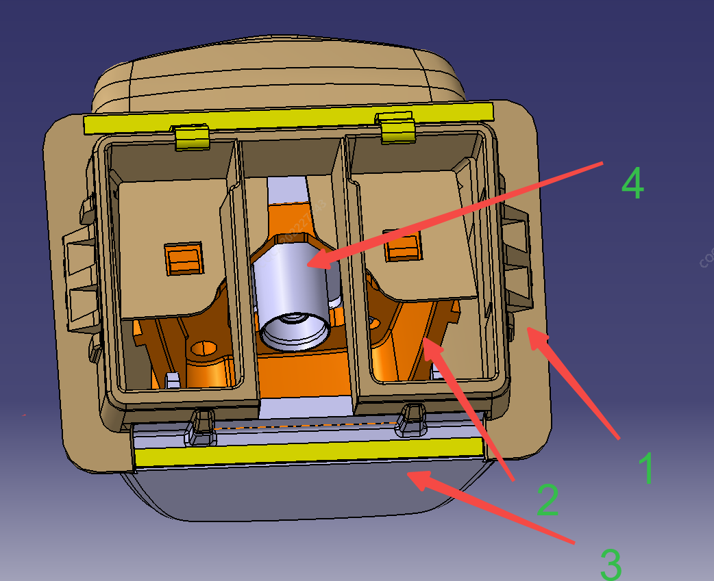

1. Кронштейн задней камеры панорамного обзора Ⅰ; 2. Кронштейн задней камеры панорамного обзора Ⅱ; 3. Задний кожух кронштейна камеры; 4. Задняя камера
Этапы установки:
1. Установить камеру на кронштейн задней камеры панорамного обзора Ⅰ, защелкнуть кронштейн задней камеры панорамного обзора Ⅱ на кронштейне Ⅰ для фиксации камеры, затем установить задний кожух кронштейна камеры с фиксацией на кронштейне Ⅰ, после чего установить собранную камеру с кронштейном на дверь задка с фиксацией защелками;
2. Подсоединить и зафиксировать разъем жгута проводов;
Этапы снятия:
1. Отсоединить разъем камеры со стороны кузова;
2. С помощью плоской отвертки аккуратно отжать задний кожух кронштейна камеры и кронштейн Ⅱ, извлечь корпус камеры;